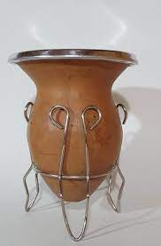
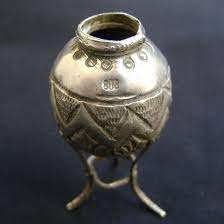
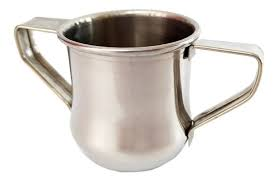
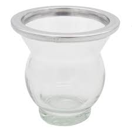
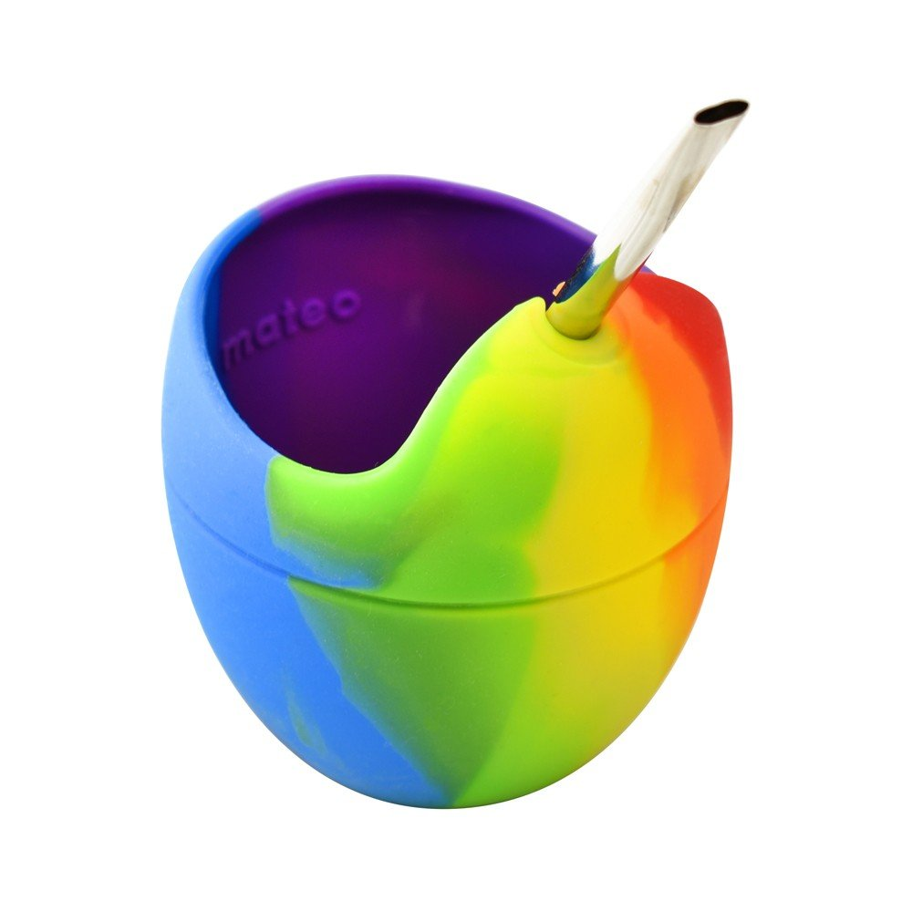
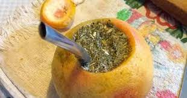
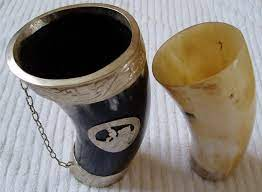

CALABAZA
Son los más utilizados; varían mucho en forma (tipo pera o poro, galleta) y tamaño porque provienen de una planta trepadora llamada Legendaria Vulgaris. Dependiendo del tipo de mate, se realiza un corte en la calabaza de forma que quede una forma de cuenco, y luego se limpia raspando la parte interior. Es importante limpiarlos y secarlos bien, y curarlos al utilizarlos por primera vez. Un consejo: Los de boca ancha aseguran mateadas más rendidoras, ya que la yerba tarda más en mojarse.

PLATA O ALPACA
Para los que gustan lucirse con sus mates, los de plata y/o alpaca son los indicados. Están realizados a partir de calabazas seleccionadas. Luego de teñidas, el artesano realiza y agrega el trabajo de ornamentación de metal. Las virolas (cintura del mate) pueden decorarse utilizando incrustaciones en plata. Los mates de plata maciza llevan una técnica que implica diseñar y dibujar, fundir el metal, laminarlo, forjarlo para darle la forma y luego darle distintos tipos de acabado como cincelado o burilado (tallado con buril) y por último el pulido o bruñido de la pieza.

MADERA
Los hay de algarrobo torneado, palo santo, quebracho, roble. Se tiñen, tallan, y adornan de diversas formas. Según el tipo de madera, cada mate adquiere un sabor peculiar. Es fundamental curarlos bien con manteca, aceite o grasa vacuna, para que no se quiebren ni acumulen humedad. Los más importante es que sean de maderas duras o semi duras y no muy aromáticas , que invadan de manera agresiva el sabor de los mates. ¿Las maderas más utilizadas? El algarrobo torneado, naranjo, cinamomo, cocobolo, palo de rosa (principalmente en Brasil, deja un aroma a rosas, limón y mandarina), quebracho y roble.

MELTAL
Algunos transmiten el calor del agua al tacto y otros se fabrican utilizando acero inoxidable en capas, las mismas aseguran que el mate no se caliente luego de varias cebadas y se dificulte la tarea del cebador cuando lo agarre. Las ventajas: Son fáciles de limpiar y no necesitan curarse.

VIDRIO / CERÁMICA
Pueden estar forrados con cuero, su ventaja principal es que tanto el vidrio como la cerámica no absorben el sabor de la yerba y son fáciles limpiar. Hay que estar atentos a cambios bruscos de temperatura para evitar que no se quiebre en el momento de prepararlo y después al limpiarlo. Los mismos recaudos hay que tomar cuando los lavamos: no usar agua muy fría o muy caliente, o esperar a que el material se enfríe y quede a temperatura ambiente.

SILICONA
Son los más modernos y también son fáciles de limpiar. Los mates de silicona no fijan bacterias ni gustos, conservan el calor, son irrompibles y de vaciado fácil. Su punto débil es que al ser flexibles, se complica un poco agarrarlos y a veces se vuelcan, pero es cuestión de acostumbrarse. Pueden encontrarse una gran variedad de colores y diseños.

POMELO
Se utiliza la fruta ahuecada como mate, puede apretarse un poco al cebarlo para darle más sabor cítrico. Con esta combinación se aprovechan las virtudes antioxidantes de la yerba mate y la vitamina C del pomelo, fundamentales para fortalecer nuestras defensas en los meses de otoño e invierno.

GUAMPA O ASTA
Está realizado con cuernos de animales vacunos. El mate de asta vacuna era utilizado por los gauchos y arrieros, y actualmente es muy utilizado por los paraguayos para tomar tereré. Para fabricarlo se bruñe el trozo de cuerno obteniendo un producto transparente y terso como el vidrio. El extremo de mayor diámetro se cierra con una tapa de madera, y el más angosto se usa de boca.
